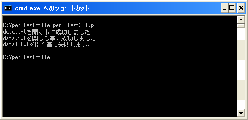

ファイルのオープンとクローズ
それではファイルから何らかの情報を読み込んだり書き込んだりするために、ファイルを開く方法を確認します。ファイルを開くためには「open」関数を使用します。
よく使われる書式は次の通りです。
open(ファイルハンドル名, "ファイル名"); open(ファイルハンドル名, "モード", "ファイル名");
対象のファイル名を指定し、ファイルとの間で開くコネクションに付ける名前をファイルハンドルとして指定します。モードについては後のページで詳しく解説します。
例えば次のように記述します。
open(DATAFILE, "data.txt");
上記の場合では、プログラムが実行されているディレクトリと同じディレクトリ上にある「data.txt」に対して読み込み専用でコネクションを開き、コネクションに対して「DATAFILE」と言うファイルハンドルを設定します。
「open」関数はファイルを開くことに成功すると真(true)を返し、失敗すると未定義値(undef)を返します。(「open」関数について詳しくは「open関数」を参照して下さい)。
ファイルを閉じる
ファイルを開くとファイルに対する様々な操作が行えます。ファイルの中身を読み込んだり書き込んだりを行った後でファイルに対する操作が必要無くなった時点でファイルを閉じるようにします。
ファイルを閉じるためには「close」関数を使います。書式は次の通りです。
close(ファイルハンドル名);
例えば次のように記述します。
open(DATAFILE, "data.txt"); close(DATAFILE);
引数には開いているコネクションに対して付けられたファイルハンドル名を指定します。「close」関数はファイルを閉じることに成功すると真(true)を返し、失敗すると偽(false)を返します。(「close」関数について詳しくは「close関数」を参照して下さい)。
サンプルプログラム
では簡単なプログラムで確認して見ます。
use strict;
use warnings;
use utf8;
binmode STDIN, ':encoding(cp932)';
binmode STDOUT, ':encoding(cp932)';
binmode STDERR, ':encoding(cp932)';
if (open(DATAFILE, "data.txt")){
print "data.txtを開く事に成功しました¥n";
if (close(DATAFILE)){
print "data.txtを閉じる事に成功しました¥n";
}else{
print "data.txtを閉じる事に失敗しました¥n";
}
}else{
print "data.txtを開く事に失敗しました¥n";
}
if (open(DATAFILE, "data1.txt")){
print "data1.txtを開く事に成功しました¥n";
if (close(DATAFILE)){
print "data1.txtを閉じる事に成功しました¥n";
}else{
print "data1.txtを閉じる事に失敗しました¥n";
}
}else{
print "data1.txtを開く事に失敗しました¥n";
}
上記を「test2-1.pl」の名前で保存します。保存する時の文字コードは「UTF-8」として下さい。そしてコマンドプロンプトを起動し、プログラムを保存したディレクトリに移動してから次のように実行して下さい。

今回はプログラムと同じディレクトリに「data.txt」と言うテキストファイルを用意してあります。(中身はなんでも構いません)。その為、「data.txt」ファイルを開く事は成功しますが「data1.txt」ファイルは存在しないのでファイルを開くことに失敗しています。
( Written by Tatsuo Ikura )

著者 / TATSUO IKURA
初心者～中級者の方を対象としたプログラミング方法や開発環境の構築の解説を行うサイトの運営を行っています。